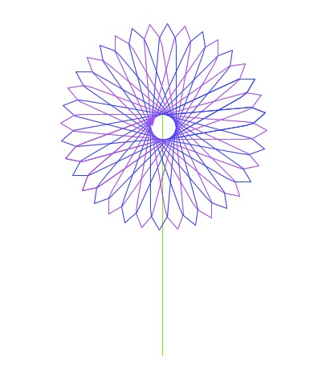

Submit the following programs via Blackboard:
- Due Date: 9 September Reading: Chapters 1 & 2
Write a program that prints your name to the screen 25 times. - Due Date: 10 September Reading: Chapters 1 & 2
Modify the chaos program (available from the author's website) so that it prints out 20 values instead of 10. - Due Date: 11 September Reading: Chapters 1 & 2
Choose a (printable) character from the keyboard. Write a program that prints an opening statement and then asks the user for a number and prints your character that many times.For example:
The fault is in our stars... Please enter a number: 2 * *
Another sample run:
The fault is in our stars... Please enter a number: 5 * * * * *
Note: your program should have a statement you like (different from the sample and unique to you, so that the cheat-checking program does not flag it as someone's work) and print a character you choose (again, different from the character chosen above).
- Due Date: 12 September Reading: Chapters 1 & 2
Write a program that converts weights measured in ounces to grams. One ounce is approximately 28.35 grams.
Hint: see the convert.py program from the book's webpage or Lab 2. - Due Date: 15 September Reading: Chapters 1 & 2
Write a program that will print out a conversion table for dollars and another currency. The currency you should use is based on the first letter of your first name:
For example, if your first name is Eric, you would use Euros. From the table above, we have that one dollar is worth 0.77 euros. You should begin the program by printing out your name. On each line, your program should write the number of dollars and the corresponding number of your currency. For example:If your name begins with... Use the currency: $1 is worth: A Afghan Afghani (AFN) 51.08 B Bangladeshi Taka (BDT) 80.58 C Costa Rican Colon (CRC) 499.38 D Danish Krone (DKK) 5.67 E Euro (EUR) 0.77 F Falkland Island Pound (FKP) 0.62 G Guatemalan Quetzal (GTQ) 0.13 H Hungarian Forint (HUF) 0.00456 I Indonesian Rupiah (IDR) 9639.99 J Japanese Yen (JPY) 83.85 K Kenyan Shilling (KES) 0.0116 L Lebanese Pound (LPP) 0.000664 M Moroccan Dirham (MAD) 0.118 N Nepalese Rupee (NPR) 0.0115 O Omani Rial (OMR) 0.384 P Polish Zloty 3.11 Q Qatari Riyal (QAR) 0.275 R Russian Ruble (RUB) 30.80 S Somali Shilling (SOS) 0.000619 T Thai Baht (THB) 30.59 U Ukrainian Hryvna (UAH) 8.10 V Venezuelan Bolivar (VEH) 4.30 W Samoan Tala (WST) 2.27 X East Caribbean Dollar (XCD) 2.70 Y Yemeni Rial (YER) 0.00477 Z Zimbabwean Dollar (ZWD) 361.90 Eric's converting program Dollars: Euros: 1 0.77 2 1.53 3 2.3 4 3.07 5 3.84
Your program should print the information for 1, 2, ..., 10 dollars. You do not need to worry about formatting (we will talk about that more in Chapter 5), but you do need to calculate all 10 entries.
Hint: modify the second program from the Lab 2.
- Due Date: 16 September Reading: Chapter 3
Write a program that asks the user for time in days and prints the number of years and days (assume that there are 365 days in a year). For example, if the user entered, 1000, your program would output, 2 years 270 days. Note that you should use "years" and "days" for all inputs (even in the cases where it is grammatically incorrect). - Due Date: 17 September Reading: Chapter 3
Write a program that asks the user for the diameter of a circular table and prints out the area. For example, if the user enters 10, your program should print out 78.5398163397.
Hint: The area of a circle is Pi*r*r where r is the radius of the circle. The radius is half of the diameter. - Due Date: 18 September Reading: Chapter 3
Built into Python is a module for simple drawing, called Turtle graphics. To use the Turtle graphics module, you must import it, just like with the math module. Some basic turtle commands are:- left(degs): turns your turtle left degs degrees
- right(degs): turns your turtle left degs degrees
- forward(s): moves your turtle forward s steps
- backward(s): moves your turtle forward s steps
import turtle def main(): daniel = turtle.Turtle() #Set up a turtle named "daniel" myWin = turtle.Screen() #The graphics window #Draw a square for i in range(4): daniel.forward(100) #Move forward 10 steps daniel.right(90) #Turn 90 degrees to the right myWin.exitonclick() #Close the window when clicked main()Modify this program to draw a 8-sided figure or octagon. Make sure to include the standard introductory comments at the beginning of your program as well as to change the name of the turtle to your name.
Hint: The turtle rotates a total of 360 in forming the polygon. For the square, the turtle turned 360/4 = 90 degrees. Using the same reasoning, how much should the turtle turn for an octogon?
Note: Choose a name for your file that is not turtle.py. When executing the "import turtle" statement, the computer first looks in the folder where the file is saved for the turtle module and then in the libraries (and other places on the path). So, it thinks the module is itself, causing all kinds of errors. To avoid this, name your program something like "myTurtle.py" or "program11.py". - Due Date: 19 September Reading: Chapter 3
Implement the following piece of pseudocode (i.e. directions that look very similar to code) as a complete program using turtle graphics:Repeat 45 times: Walk forward 100 steps Turn right 92 degreesYour output should look similar to:

- Due Date: 22 September Reading: Chapter 3
Write a program to calculate how much money you would have if your money decreased by 5% each year. Your program should ask the user for the number of years and display the amount of money for each year. The starting amount of money is $1000. Here is a sample interaction:Please enter the number of years: 5 Year 0 : 950.0 Year 1 : 902.5 Year 2 : 857.375 Year 3 : 814.50625 Year 4 : 773.7809375
(Do not worry about formatting the amounts. We will discuss how to do that well in Chapter 5.)
- Due Date: 23 September Reading: Chapter 3
Modify the book's factorial program to calculate the double factorial. The double factorial is similar to the factorial, except you multiply every other number. For example, 5!! = 5 * 3 * 1 and 8!! = 8 * 6 * 4 * 2. Formally, n!! = n*(n-2)*(n-4)*...*(1).
Hint: you only need to change the range statement. - Due Date: 29 September Reading: Chapter 4
Modify the bouncing ball example from Lab 3 so that the ball bounces a little bit less each time. At the end, it should appear to roll across the x-axis.
Hint: the only change needed is to the height of the ball. How can you make the height get smaller as time increases? - Due Date: 30 September Reading: Chapter 4
Using Zelle's graphics module, draw your initials-- the first letters of your names. Your display should contain at least 6 different objects (if the letters in your name can be displayed with less, add extra objects for decoration). - Due Date: 1 October Reading: Chapter 4
Using Zelle's graphics module, draw a house. Your display should contain 3 or more objects forming the house with roof, doors, and a window. Use the Text object to include your name in the picture. - Due Date: 2 October Reading: Chapter 4
Modify the program triangle.py from the textbook (also available at the author's website) to draw a small rectangle (instead of a point) at each point clicked by the user.
- Due Date: 3 October Reading: Chapter 4
Write a program that takes two mouse clicks from the user and draws an oval whose bounding box corners include the two points clicked. - Due Date: 6 October Reading: Chapter 4
Modify the bouncing ball problem (from Lab 3) to ``wrap'' around the screen twice. That is, when the ball gets to the right end of the screen, have it continue on the left hand side.
Hint: use the remainder operator (%) to make sure that the x-coordinate is always between 0 and the width of the window. The default value for the veloc variable matches the periodicity (how often the function repeats itself). If you change it to .49, it will be easier to see the wrapping (since the ball won't be in the exact path same path the second time through). - Due Date: 7 October Reading: Chapter 4
Write a program that takes twenty mouse clicks from the user and draws a polygon whose corners, or vertices, are the clicked points.
Hint: use the program you wrote for Lab 4 and add a line from the last point clicked to the first point clicked. -
Due Date: 8 October Reading: Chapter 5
Write a program that asks the user for a string and then prints it out in all upper case and then all lower case. Here is a sample run of the program:Please enter a string: Look behind, look here, look ahead You entered (shouting): LOOK BEHIND, LOOK HERE, LOOK AHEAD But better (whispering): look behind, look here, look ahead
- Due Date: 9 October Reading: Chapter 5
Implement the following piece of pseudocode as a complete program:1. Prompt the user to enter a string and call it s. 2. Let l be the length of s. 3. For i from 0 upto l-1: 4. print s[i], s[l-1-i] 5. Print a closing statementHere is a sample run of the program:Enter string: a man a plan a canal panama a a m m a a n n a p a l p a l n a a n c a a c n a a n l a p l a p a n n a a m m a a Thank you for using my program!
- Due Date: 10 October Reading: Chapter 5
Write a program that measures strings in terms of the length of your name. For example, if your first name is "Kate", you would use the length of the string "Kate" which is 4. If your name is "Daniel", you would use the length 6.Your program should print out your name to the screen and then ask the user to enter a string. You should then print out how long the string is in terms of the length of your name (that is, the length of the user's string divided by your length). For example,
The measuring string is "Kate" Please enter a string: Hello world Your string is 2.75 Kate's long.
While, if your name was Daniel, your program would look like:The measuring string is "Daniel" Please enter a string: Hello mom! Your string is 1.8333 Daniel's long.
- Due Date: 13 October Reading: Chapter 5
Modify the encode.py program from Lab 5 to use an offset entered by the user to encrypt the message. The program in the lab encrypts each character by shifting 1 place ahead in the alphabet. Your program should ask the user for the offset and encrypt their string by replacing each character by one that is offset places ahead in the alphabet.A sample of Caesar cipher disk (from en.wikipedia.org/wiki/Caesar_cipher) with an offset of 13 (that is, every letter in plain text goes to one 13 letters to its right):

- Due Date: 14 October Reading: Chapter 5
Write a program that asks the user for a list of prices of items purchased and prints out each price and the total, formatted nicely. Here is a sample run of the program:Please enter the prices: 2.34, .99, 100, 81.05, 90 Your receipt: 2.34 0.99 100.00 81.05 90.00 ---------------- Total: 274.38Hint: use the format() statement discussed in Chapter 5. - Due Date: 15 October Reading: Chapter 5
Write a program that uses your full name and prints it to the screen, cycling through the string. You must store your name in a string and use a loop to print out the answer. For example, if your name was "Herbert H. Lehman", the print out would be:H e r b e r t H . L e h m a n e r b e r t H . L e h m a n H r b e r t H . L e h m a n H e b e r t H . L e h m a n H e r e r t H . L e h m a n H e r b r t H . L e h m a n H e r b e t H . L e h m a n H e r b e r H . L e h m a n H e r b e r t H . L e h m a n H e r b e r t . L e h m a n H e r b e r t H L e h m a n H e r b e r t H . L e h m a n H e r b e r t H . e h m a n H e r b e r t H . L h m a n H e r b e r t H . L e m a n H e r b e r t H . L e h a n H e r b e r t H . L e h m n H e r b e r t H . L e h m a
Hint: one way to approach this is to store the name with the spaces:"H e r b e r t H . L e h m a n"
- Due Date: 16 October Reading: Chapter 5
Make a list of at least 5 different places that you like to visit (these should be places that you would like to visit and not identical to others' lists or it will be picked up by the cheat-checking programs).Your program should print out the list regularly and vertically. For example,
['San Francisco', 'Christchurch ', 'Sydney ', 'Bangkok ', 'Copenhagen '] S C S B C a h y a o n r d n p i n g e F s e k n r t y o h a c k a n h g c u e i r n s c c h o
Hint: if you have a list of strings, places, then places[0][i] refers to the ith character of the first word in your list. Start by printing out the first place name vertically, then add in the others.
- Due Date: 20 October Reading: Chapter 5
Write a program that asks the user for a name of a file and then prints to the screen the number of characters and lines in the file.
Hint: see Lab 6. - Due Date: 21 October Reading: Chapter 5
Write a program that asks the user for a file containing a list of items to be completed and a name for an output file. Your program should then write the list, with item numbers to the output file. For example, if the input file is:Finish my Python homework. Buy milk. Do laundry. Update webpage.
Then the output file would be:1. Finish my Python homework. 2. Buy milk. 3. Do laundry. 4. Update webpage.
- Due Date: 23 October Reading: Chapter 5
Write a program that asks the user for the name of a file and a line length. Your program should then "wrap" all lines that are longer than line length, and print the result on the screen. For example, if the file contains:01234567890123456789012345 This line has more than 20 characters. This one has less And this one has lots, lots, lots, more than 20 characters!
and the user entered the length of 20, all lines longer than 20 would be wrapped to the next line:01234567890123456789 012345 This line has more t han 20 characters. This one has less And this one has lot s, lots, lots, more than 20 characters!
Hint: break the problem in to parts: first write a program that will print lines from a file to the screen (see Lab 6). Then modify your initial program to only print lines up to the length entered. And, to finish the program, then add in the code that prints lines that are longer than the length entered. Note you will have extra blank lines, if a short line is entered (we will discuss how to print different things depending on the length when we discuss decisions in Chapter 7) and you do not have to worry about lines being longer than 40 characters (i.e. no need to wrap a line more than once). - Due Date: 27 October Reading: Chapter 6
Write a program that asks for a list of names and a list of cities, as well as a file. Your program should use the file as a template to generate letters customized with the names and cities entered. You should generate a letter for each name/address pair on the inputted lists. The customized letters should replace every the **INSERT NAME HERE** with the name and **INSERT ADDRESS HERE** with the address.For example, if the file inputTemplate.txt contained:
New York, New York 11 October 2013 **INSERT NAME HERE** **INSERT ADDRESS HERE** Dear **INSERT NAME HERE**, Thank you for your service to New York City, and, in particular, to the education of its residents. Those in **INSERT ADDRESS HERE** appreciate it! Best wishes to **INSERT NAME HERE** and your family, --CUNY
A sample run of the program would be:
Please enter the name of the template file: inputTemplate.txt Please enter names of recipients: Herbert H. Lehman, Bernard M. Baruch, Fiorello H. LaGuardia Please list addresses: Bronx NY, New York NY, Queens NY Your customized letters are below: New York, New York 11 October 2013 Herbert H. Lehman Bronx NY Dear Herbert H. Lehman, Thank you for your service to New York City, and, in particular, to the education of its residents. Those in Bronx NY appreciate it! Best wishes to Herbert H. Lehman and your family, --CUNY New York, New York 11 October 2013 Bernard M. Baruch New York NY Dear Bernard M. Baruch, Thank you for your service to New York City, and, in particular, to the education of its residents. Those in New York NY appreciate it! Best wishes to Bernard M. Baruch and your family, --CUNY New York, New York 11 October 2013 Fiorello H. LaGuardia Queens NY Dear Fiorello H. LaGuardia, Thank you for your service to New York City, and, in particular, to the education of its residents. Those in Queens NY appreciate it! Best wishes to Fiorello H. LaGuardia and your family, --CUNY
- Due Date: 28 October Reading: Chapter 6
(From Chapter 6, #1, Page 196) Write a program to print the lyrics of the song "Old MacDonald." Your program should print the lyrics for five different animals, similar to the example verse below.Old MacDonald had a farm, Ei-igh, Ee-igh, Oh! And on that farm he had a cow, Ee-igh, Ee-igh, Oh! Whith a moo, moo here and a moo, moo there. Here a moo, there a moo, everywhere a moo, moo. Old MacDonald had a farm, Ei-igh, Ee-igh, Oh!
Hint: use a function with two input parameters one for the animal and the other for the related sound.
- Due Date: 29 October Reading: Chapter 6
Modify the program from Lab 7 to allow the user to enter two different mathematical functions to be graphed. Your program should then display both on in the graphics window. 6 -
Due Date: 3 November Reading: Chapter 6
Write a function that takes as a parameter a list of strings and returns a list containing the lengths of each of the strings. That is, if the input parameter is ["Daniel","Nashyl","Orla","Simone","Zakaria"], your function should return [6, 6, 4, 6, 7]. The file you submit should include a main() function that demonstrates that your function works. - Due Date: 4 November Reading: Chapter 6
Write a function that takes as a parameter a list of strings and returns a list containing the first letter of each of the strings. That is, if the input parameter is ["Daniel","Nashyl","Orla","Simone","Zakaria"], your function should return ['D', 'N', 'O', 'S', 'Z']. The file you submit should include a main() function that demonstrates that your function works. - Due Date: 5 November Reading: Chapter 6
Lab 8 focuses on top-down design; that is, beginning with an outline for the main() and filling in the function definitions. Fill in the missing function definitions for this program:from turtle import * def main(): myWin = turtle.Screen() #The graphics window tristan = turtle.Turtle() #Tristan will be our turtle for this program drawStem(tristan) #Draw a green stem for i in range(20): drawPetal(tristan,"blue") #Draws a blue petal for our flower drawPetal(tristan,"purple") #Draws a purple petal for our flower myWin.exitonclick() #Close the window when clicked
That is, write the functions drawStem() and drawPetal(). Include all functions, including the main() above in the file you submit. Sample output of the program:
(Note: you can change the color that your turtle, using the function, color(). For example, if you turtle is called tess to change it's color in stringColor, write tess.color(stringColor).)
- Due Date: 6 November Reading: Chapter 6
Fill in the missing function definitions for this program:from graphics import * def main(): w = setUp() #Creates and returns a graphics window x1,y1,x2,y2 = userInput() #Asks user for 4 inputs and returns numbers entered displayLine(w,x1,y1,x2,y2) #Draws a line from (x1,y1) to (x2,y2) on window w conclusion(w) #Gets a mouse click and closes window w main()
That is, write the functions setUp(), userInput(), displayLine() and conclusion(). Include all functions, including the main() above in the file you submit.
Hint: see Lab 8.
- Due Date: 10 November Reading: Chapter 7
Define a Python function named calculate_tax() which accepts one parameter, income, and returns the income tax. Income is taxed according to the following rule: the first $250,000 is taxed at 40% and any remaining income is taxed at 80%. For example, calculate_tax(100000) should return $100,000 * 0.40 = $40,000, while calculate_tax(300000) should return $250,000 * 0.40 + 50,000 * 0.80 = $140,000.In your file, you should include a main() that calls your function several times to demonstrate that it works.
- Due Date: 11 November Reading: Chapter 7
Write a function that returns the number of positive integers in a list of integers.In your file, you should include a main() that allows the user to enter a list of numbers and calls your function to demonstrate that it works.
- Due Date: 12 November Reading: Chapter 7
Write a function that takes number between 1 and 7 as a parameter and prints out the corresponding day as a string. For example, if the parameter is 1, your function should print out Monday. If the parameter is 2, your function should print out Tuesday, etc.In your file, you should include a main() that allows the user to enter a number and calls your function to demonstrate that it works.
- Due Date: 17 November Reading: Chapter 7
Write a function that takes as two parameters: the zone and the duration, and returns the Barcelona metro and bus (TMB) fare.- If the zone is 1 and duration is "oneDay," the fare is 7.
- If the zone is 1 and the duration is "tenRide," the fare is 9.45.
- If the zone is 1 and the duration is "oneMonth," the fare is 50.95.
- If the zone is 2 and duration is "oneDay," the fare is 11.15.
- If the zone is 2 and the duration is "tenRide," the fare is 18.75.
- If the zone is 2 and the duration is "oneMonth," the fare is 74.85. If the zone is greater than or equal to 3, return a negative number (since your calculator does not handle inputs that high).
You should include in the file a main() that calls your function several times to demonstrate that it works.
- Due Date: 18 November Reading: Chapter 7
Write a graphics program that changes colors depending where the user clicks on the window. If the user clicks on the left side, your name (or initials) should appear in green in the window. If the user clicks on the right side, your name (or initials) should appear in red in the window. (You may write your name in text or initials using graphics or text, and you may color the letters or the background-- just as long as it is clear that the color has changed when the mouse is clicked on the left or the right). Your program should allow the user to click 5 times before ending the program.
Hint: see Lab 9.
- Due Date: 19 November Reading: Chapter 7
The program turtleString.py takes a string as input and uses that string to control what the turtle draws on the screen (inspired by code.org's graph paper programming). Currently, the program processes the following commands:- 'F': moves the turtle forward
- 'L': turns the turtle 90 degrees to the left
- 'R': turns the turtle 90 degrees to the right
- '^': lifts the pen
- 'v': lowers the pen
Modify this program to allow the user also to specify with the following symbols:
- 'B': moves the turtle backwards
- 'r': change the pen color to red
- 'g': change the pen color to green
- 'b': change the pen color to blue
Submit your modified program (including a comment at the top of the program with your name).
- Due Date: 20 November Reading: Chapter 7
Write a program that allows the user to choose which currency they would like to convert. Using the chart from #5, choose the currencies that begin with the first five unique letters of your name. You should print out the currencies your program will convert, ask the user for their currency choice, and then amount of money to be converted. Your program should then print the amount of money in the chosen currency. For example:Sameh's Currency Converter Converts from dollars into Somali Shilling, Afghan Afghanis, Moroccan Dirhams, Euros, and Hungarian Forints. Choose a currency ('S', 'A', 'M', 'E', 'H'): h What amount: 1000 The chosen currency is: Hungarian Forints The converted amount is: 4.56 - Due Date: 24 November Reading: Chapter 8
Write a guessing word program. First, pick a word, name, or phrase for the user to guess (make sure that it is different from others' words so the cheat-checking programs don't accidently match your program to others and that the word is not obscene (since it will be flagged by the Blackboard system)).While the user has not guessed the word, print out two messages: one that says whether the message that was entered is too short, just right, or too long. Your second message should tell the user if there guess was before or after in the ordering of strings. Your game should continue until they guess your secret string and then should print a message congratulating them.
Hint: see first half of Lab 10. - Due Date: 25 November Reading: Chapter 8
Write a program that asks the user to enter a number between -10 and 10. If they enter a number out of range, print a message that the number is out of range and prompt them again for a number between -10 and 10. When the user enters a number in range, print the number to the screen and end the program. - Due Date: 1 December Reading: Chapter 8
The program lotsOfErrors.py has lots of errors. Fix the errors and sumbit the modified program.
Hint: see end of Lab 10.
- Due Date: 2 December Reading: Chapter 8
Implement the following piece of pseudocode as a complete program:procedure gnomeSort(a[]) pos := 1 while pos < length(a) if (a[pos] >= a[pos-1]) pos := pos + 1 else swap a[pos] and a[pos-1] if (pos > 1) pos := pos - 1 end if end if end while end procedure(from http://en.wikipedia.org/wiki/Gnome_sort#Description)Include a main() function in your program that demonstrates that it works.
Hint: see Lab 11 and animation at the wiki page. - Due Date: 8 December Reading: Chapter 9
Modify the random walk in Lab 12 to allow the turtle to turn a random angle (between 0 and 360 degrees) each step.
Hint: at every step, you should choose an angle between 0 and 360 degrees at random and have your turtle turn by that angle and take 10 steps. - Due Date: 9 December Reading: Chapter 9
Write a simulation of the rolling of 2 six-sided dice. Your program should have a function that oneRoll() that returns the sum of rolling your dice. You may assume that each of the six sides is equally likely to be rolled (that is, the dice are "fair"). Run your simulation 10,000 times and report the frequency that each sum occurred.A sample run of your program should look something like (but not identical due to the randomness of the simulation):
2 : 292 3 : 536 4 : 810 5 : 1100 6 : 1428 7 : 1631 8 : 1439 9 : 1100 10 : 825 11 : 543 12 : 296
- Due Date: 10 December Reading: Chapter 10
Modify the book's student GPA example (Python files available from the Chapter 10 folder on the book's website) to also print out the information for the student who has completed the most hours towards their degree (currently the program only prints out the student with the best GPA).
Hint: see Lab 13. - Due Date: 11 December Reading: Chapter 10
Modify the book's dice example (Python files available from the Chapter 10 folder on the book's website) to have 9-sided dice. That is, the dice display numbers: 1,2,3,4,5,6,7,8,9. Modify the main() function to demonstrate your modified dice (it currently rolls 6-sided dice).To submit your program, include the dice class and main() in the same file. No changes are needed to the button class or graphics module, so, no need to include those.
Hint: draw out what the face of the die would look like to 7, 8, and 9.